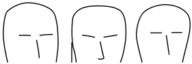
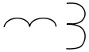

Беседа 2813 от 3877 · Беинса Дуно
Музикалният живот на душата
Отче наш.
„Духът Божий“
Имате ли зададена някоя тема? Пишете върху темата „От какво зависи силата на речта?“
Ние сме дошли до една област, дето всички неприятности на съвременната култура произтичат от това, че хората нямат едно правилно различаване на нещата. Човек ако не може правилно да разрешава, ще има противоречия. Например, на вас може да се харесва една дреха, която има хубав небесно-син цвят. Цветът е отличен, но самата дреха няма съдържание, не е здрава, няма издръжливост. А понякой път съдържанието е хубаво, дрехата е здрава, но цветът ѝ, някак си не е приятен. Има хора, които в своята обхода външно са много деликатни, имат хубав цвят. Първият път като ги срещнеш са учтиви, имат дипломация, маниери, във всичко са отлични, знаят как да постъпят. Той е отличен, докато не е взел от тебе пари в заем. Щом е взел парите в заем, вече се изменя. Вземете една котка. Тя все мърка около тебе, но дайте ѝ една риба скумрия, котката не мърка вече, но хване скумрийцата, и като речеш да я вземеш, тя си дига крака срещу тебе и казва: „Или ти или аз“. Въпросът е кой ще яде рибата. Като влезеш при учените хора, някой път те се скарват за някаква си скумрийца, за някаква си история, кой по-добре разяснява някакъв си въпрос. Като влезеш в моралната област, хората се скарват по въпроса дали някой се е молил добре, къде се е молил, как е коленичил. В семейния живот става цял въпрос как така мъжът да си тури черната връзка малко накриво. Или братята се скарали за нещо.
Представете си, че с вас много пъти съм се обхождал много добре, но един път съм казал: „Много лош човек си“. Ти ми гледаш лицето, че е усмихнато и тогава няма да вземете тези (думи) много силно. Но, ако си набръчкам веждите и ти кажа „Много си лош“, на тебе веднага ще ти стане неприятно. Вие сте се повлияли от дисхармонията на моето лице. Някои линии са се появили на лицето ми, които са изменили вашето състояние. Като философ вие сте дали известни тълкувания на тези линии. Често забелязвате някой човек, че като му приказваш, той си подигне само единия ъгъл на устните и ти тълкуваш това, че той нито пет пари не дава за онова, което ти му говориш.
Откъде накъде този речник. Защо това движение на устните означава, че пет пари не дава. Казвам: Трябва да разбирате природата. Вие сте създадени от разни материали и всичкия материал от който сте създадени е индивидуализиран. Всеки материал от вас си има свое убежище. Например на желязото, което е в твоята кръв, ти не можеш да разчиташ в морално отношение. После ти не можеш да разчиташ на медта. Ако се насъбере много мед в тебе, тя ще те отрови, ще се образуват известни отрови. Да кажем, че някой път вие седите и сте неразположени. След като сте водили един религиозен живот, минала ви е някаква си идея, че вие не сте добър човек. Или някой път ви мине идеята, че вие сте добър. На какво се основава да мислите, че вие сте добър или не? – Има един вътрешен закон, който определя живота. Бог, Който е създал света, изисква от всички живи същества да разбират Неговите Закони и всеки според степента на неговото развитие да разбира Законите Му.
Често говорят за влиянието на музиката. Тези стършели, които снасят своите яйца под кожата на млекопитающите, имат особен тон. Като минава стършелът, образува особен тон и като чуе животното този тон, то бяга. Няма да ви кажа този тон, защото, ако ви го произнеса, мога да ви накарам всички да излезете вън. Вие сте били като млекопитающи и при чуването на този тон, ще изгубите съзнанието си и у вас ще се роди един страх.
Някой път вие мислите, че съм много сръчен, смел, но човек си има известни слабости. Ще ви дам един пример: Имаше във Варна една баба Хранова, акушерка. Тя беше героиня, добра плувачка, можеше да плува по 2–3 километра навътре в морето, като някой тюлен се разхожда из морето. Но само като ѝ покажеш една пиявица в шише, тя като я види, хуква да бяга. Тя е готова да се бие с кой да е мъж и да се защитава, но щом види пиявица, бяга. Тя казва: „Аз не зная с какво да си обясня това. У мене се явява един панически страх, като че нещо ме обсебва“. Тя е пострадала. Как ще се обясни този страх от пиявицата в нея? – Може да се обясни. Представете се, че във вашето здание има 100 кг. барут. Детето се приближава с една малка искрица до барута. Знаете ли какво може да произведе тази искрица върху този барут? – Всичкото ви здание ще хвръкне във въздуха.
Понякой път вие не знаете какво се крие на върха на вашия език и изказвате една дума, чрез която правите една такава експлозия в природата. За всякоя дума, която човек казва, Бог го държи отговорен. Една дума в дипломатическия свят, отваря цяла война. Един поглед разваля живота на хората за цял живот.
Като влезете в религиозния живот се излагате на известни пакости. У религиозните хора се явяват най-опасните работи за скандали. И между напредналите ангели се явиха най-лошите постъпки и онези погрешки, които те направиха, Господ не им ги прости и ги върза, и ги прати в изгнание. А пък някой път аз гледам тук приятели, които си играят с огъня. И аз съм дошъл до едно място да кажа, че трябва да затворя школата. Не намирам за нужно да ви говоря по-нататък и трябва да ви оставя да научите Божествения Закон. Онази вечер цял един скандал стана тук. Тук има братя и сестри, които толкова време следват този Път! Има някои неща, които могат да се търпят. Но аз не искам вие да престъпвате Божия Закон. Защото според този начин на постъпване, който имате, не мислете, че Небето е място, гдето могат да ви пуснат, както тук. Кракът на човека, който не мисли, не чувствува и не постъпва правилно, в райската градина не може да стъпи. Адам след като престъпи Божия Закон, Бог го изкара из райската градина, направи дрехи на Адам и Ева и ги изпъди навън. Законът е все същият и сега. Днес можеш да имаш хубаво настроение, но щом съгрешиш ще излезеш извън рая. Ще ти дойде скъпо. Ти казваш:„ Учителят каза така и така“. Христос нали е казал хубави работи. Всички проповядват това, което Христос не е казал. И често вие говорите това, което аз не съм казвал.
Говорим за Новото учение, но в какво седи то? – Новото учение седи в разбирането на Любовта. В какво седи разбирането на Любовта? Ако Любовта ви бъде съвършена, няма да имате никаква болка никъде. Аз забелязвам – мога да имам болки, които произтичат от самия мен, а пък мога да имам болки, които произтичат от окръжаващата среда. Аз мога да имам ревматизъм в краката си. Всякога щом видя един човек, който страда от ревматизъм и мен може да ме заболи кракът от симпатия.
Обичаш някой човек, който е добър и ще чувствуваш добрите му работи. Ако е лош, ще чувствуваш лошите му работи. Ако той има болка в сърцето си и ти ще имаш. Ако той има главоболие и ти ще имаш. Ако той има задух, и ти ще имаш.
Ти казваш: „Да се обичаме“. Как ще се обичаме тогава? Онзи, който обича другите, трябва да е по-силен, да лекува недъзите на хората. Щом не можеш да обичаш хората и да ги лекуваш, остави, не се занимавай с Любовта. И котката обича някой път птичките. Тук имаше една котка, която изяде една птичка и после умря. Видях я, че носи една птичка и след един месец умря котката.
Всички вие седите на едно място в почвата, на която сега седите, отдолу има динамит. Всякога може да произведете една експлозия. В човека, в неговия мозък, в неговото тяло има толкова взривни вещества, че всякога сами може да произведете един взрив. Ти ще кажеш: „Че как може да се произведе взрив?“ – Взрив може да произведе яденето. Седите на една трапеза и гледате на други колко са сипали, и на тебе колко, и веднага във вас има една мисъл къде си седнал, дали отляво или отдясно, и ще се яви у тебе въпрос: „Защо да си на това място“. Това може да произведе цял един взрив.
Казваш: „По свобода да си изберат“. Но знаете ли какво нещо е избиране по свобода? – Попитайте един музикант, който е вещ в музиката. Той ще постави всички тонове на мястото в музикалната стълба. А пък онзи, който не разбира музиката, ще ги постави гдето намира за добре и ще каже: „Аз така мисля“. И после онзи, който разбира, ще разпредели нотите на цели, половинки, осминки, шестнайсетинки и пр., които ще употреби на място, после ще употреби правилно тактовете 2⁄4, 3⁄4, и т.н.
И самият живот е музика. За да живеш в пълния смисъл, трябва да си музикант. Трябва да знаеш всяка една постъпка как да я поставиш. У вас се заражда желание да живеете добре. При добрия живот около себе си ще имате едно противоречие. Когато се говори за тези работи, вие не изследвате себе си, не изучавате себе си, а изучавате другите хора. Като изучаваш другите хора, ни най-малко няма да се ползуваш ти. Техните погрешки не са твои. И техните добродетели не са твои. Косвено те ще ти влияят. Когато някой сгреши, може по симпатия да ти причини вреда. Но един човек, който живее зле, не може да ти причини зло всъщност. И ако е добър, пак не може да ти направи добро. Човек остава такъв, какъвто е той всъщност.
Понякога вие упорствувате. Упорството у човека е един Божествен морален импулс. Упорството у човека зависи от Божественото в човека. Да упорствуваш е Божествено. Но знаете ли къде трябва да турите упорството? – Например искаш да пиеш винце и си казваш: „Аз трябва да пия вино“. Думите да пия са прави. Право е, че трябва да пиеш, но какво? Никой не трябва да ти каже, че не трябва да пиеш. Онзи, който ти казва, че не трябва да пиеш, той не говори право. Никога не казвай, че не трябва да пиеш. Но какво трябва да пиеш? – Вода. Не казвай: „Не пий вино!“ Оставете виното настрани. Не се занимавай с виното. От какво е произлязло виното. Виното произлязло от сладкото. Следователно, всеки един от вас, вие като станете много добри, може да станете и много лоши. Всички хора, които са много лоши, са и много добри. И които са много добри, са и много лоши.
Вие живеете в един свят на състезание. Например, вземете двама приятели, вземете две майки. Те имат две деца и ги сравняват, кое дете е по-хубаво. Всяка една майка казва, че нейното дете е по-хубаво и веднага ще се скарат. Защо ще се скарат? – От неразбиране. Всяко едно дете в света се ражда, не за някаква похвала отвън. Детето се ражда в Божествената Хармония, за да попълни някое празно място, за да заеме мястото на някоя нота в Божествената Хармония.
Някои деца се раждат с басовия ключ, други в теноровия ключ, някои в алтовия ключ, а някои в сопрановия. Сега аз ви говоря не каква е идеята у вас. Какво е това басов ключ? – Човек е басов ключ има много желания. Знаете ли какво може да направи басът? – Басът може да направи много хубави работи, но и много големи пакости. Също така и сопрановият ключ.
У всинца ви има едно желание да изправите света. Помнете едно нещо: Никой не е изправил света. И вие няма да го изправите. И никой няма да го изправи. И хиляди учители няма да го изправят. Ако светът можеше да се оправи, то Христос дойде преди 2000 години. Преди Христа е имало други. Ти ще кажеш: „Бог създаде света и светът не е оправен“. Светът е оправен, но вие мислите, че той не е оправен. This, that, това. Каква е разликата между първата и втората дума? – Как се превежда тая английска дума? (Това, онова, че). Но това е приблизително.
Буквата „т“ е взета от еврейската буква „ш“. Тази буква сама по себе си показва едно лекуване на материалният свят. А буквата „ш“е чаша пълна. Пияницата при „ш“ е изпил две чаши вино. След като си изпил виното пак ще обърнеш чашата нагоре, за да ги изпълниш. Първата чаша е красива, ти ще усетиш едно вдъхновение. Ако изпиеш още една чаша, ще се усетиш по-възбуден, но след 10–15 чаши, ще станеш философ, ще клюмнеш и в дълбоко размишление ще заспиш.
Често препоръчват на запад източното концентриране. Да кажем, че се намираш в някоя кръчма и след като се напиеш, заспиш. Има няколко хора, които като се концентрират, заспиват. Значи има едно концентриране, което е направено от соковете на виното, а пък има концентриране, което е направено от чиста вода. Не трябва да имаш никакво желание да обсебиш този обект, върху който се концентрираш. Щом имаш желание, и най-малкото желание да го задържиш за себе си, ти вече пиеш едно опивателно питие.
При Любовта се вършат най-големите пакости. Яков имаше едно чувство: Обичаше хубавите жени, после имаше той и чувството на стяженолюбие. Той искаше да има нещо хубаво. Кожата му не беше космата. Той беше женствен по характер и обичаше красивите жени. Майката на Якова беше красива и той приличаше на майка си. Тя имаше особена слабост към него, тя го обичаше и тя го подтикна да отиде той да излъже баща си. Според еврейският закон, Исав беше първият, а тя искаше да направи последния пръв, а първият последен. И майка му каза: „Аз ще те направя такъв, че баща ти да не те познае“. Или ще кажете: „Каква е тази майка?“ Но вие раждате в себе си едно чувство. И вие като Якова имате това чувство и искате да излъжете Господа. На вашият стремеж турите някаква Божествена мисъл и казвате: „Аз служа на Господа. Аз правя това за Господа“. А пък той не е дошъл ни най-малко от обич към Господа.
Един млад американец отишъл на едно място и видял една млада мома, в която се влюбил. Той отишъл да проповядва, но не отивал да проповядва в други села, а все в това село, гдето намерил тази хубава мома. И гледал дали тя е там и когато тя е там, той се разпалвал и разтърсвал всички хора. Той отивал за момата. Другите казвали: „Колко хубаво приказва, колко Божествено, мед капе от устата му“. Този мед не е за публиката. Този мед е за онази мома. И един ден, когато всички хора се научават, че този мед е за нея, всички ще се настроят против него.
Вие сте дошли до едно положение да различавате. Да допуснем, че правиш едно добро в света. Какви са подбудителните причини? – Аз ви говоря за ваше добро, понеже мястото, гдето сте дошли е много опасно.
Преди години аз се занимавах с философията на музиката, не на обикновената музика, но на музиката, която съществува в природата. Всички добри и лоши неща произтичат от музиката, от хармонията. Аз съм турил най-хубавите струни на цигулката си и като тегля два, три пъти на една струна, тя понякога се скъсва; тегля струна „ре“ и тя се скъсва. Тегля струна „ла“, скъсва се и тя. Тегля струна „ми“, скъсва се и тя. Опасно е при някои музикални парчета. Една хубава струна струва 30 лева, 40 лева, 100 лева. Всеки ден като късаш по три струни, каква ще бъде загубата? – Паганини е правил един опит, за да покаже на публиката, че е добър свирец. Той нагласява цигулката и като удря лъка, скъсва се струна „ми“. Продължава да свири. Удари лъка на струна „ла“ и тя се скъсва, и той довършва концерта на двете останали струни. Скъсването на двете струни му е било необходимо за да произведе известен ефект. Ако можете като Паганини да свирите на две струни – да, но ако не сте музикант като него, не ги скъсвайте, защото ще загазите.
Аз съм забелязвал всякога следното: Има известни музикални парчета, които ако изсвиря, ще падне чаша, ще се търкулне картина, ще стане голяма пакост. Тогава аз ще свиря друг мотив, за да противодействувам. Някои сте почнали да свирите една гама, която аз наричам гама на смъртта и тогава се зараждат много болести.
Аз съжалявам, че тук на Изгрева боледувате. Боледувате, понеже свирите на тази гама, която носи смъртта. Вие казвате: „Ние не живеем добре“. Така не се говори. Вие казвате: „Не сме добри хора“. Добри сте, но не постъпвате добре. Богати сте, но не сте щедри. Имате отлична мисъл, но не изказвате мисълта. Вашата мисъл я изказвате, когато не трябва. Минава една мечка и вие я видите и се уплашите. Но след като влезе мечката в гората, вие стреляте. След като влезе мечката в гората, няма какво да стреляте.
Ако можете да поправите някого, кажете му така: „Братко, имам да ти кажа нещо на ухото“. А пък вие ще видите една лоша черта у него и не му я казвате, и като си отиде той, и вие говорите зад гърба му. Той прави това, онова. И образувате цяла една атмосфера, която не е хубава. Бог не изисква това.
Не говорете против себе си, понеже вие сте създания Божий. Не казвайте: „Аз съм лош човек“, но кажи: „Не съм се научил да свиря на цигулка“. Цигулката е отлична, струните са отлични, лъкът е отличен, учителят, който ви учи е отличен. Единственото нещо, което ви липсва е, че вие не знаете да свирите. Не че сте неспособни, но някъде бързате. Някои деца гледам са много послушни и свирят добре. А някои не.
Вие искате да бъдете диригенти. Всеки един от вас е диригент. Езикът е капелмайстор. И когато твоят език почне да говори, капелмайсторът е на работа. Я вижте как са отворени очите на един капелмайстор, който гледа и слуша свиренето на всеки инструмент. Това не е лесен занаят, както помислил един българин. Например как ще дадете един такт 7⁄16? – Такъв такт има, например, нашата ръченица? – Каква ще бъде бързината на ръченицата? – Като засвири цигуларят, той трябва да знае как трябва да се играе това парче. И както той свири, така трябва да играят другите. Цигуларят трябва да знае къде трябва да свири по-бързо и къде по-бавно. Понякой път играчите заставят капелмайстора да свири бавно или бързо. (Учителят изпя песента „Духът Божи“) В Духът всяко движение е разумно. В Духът няма нещо погрешно. В Божествения Дух всичко е съвършенно. Когато пее един човек, който знае музиката, всички тонове ще бъдат изпяти правилно. Ще падат на мястото и ако ти слушаш да пее един такъв певец, възприемаш неговата музика, то ако имаш болест в сърцето, в главата, в гърдите, всичко ще изчезне. Ако си сиромах, ще забогатееш. Ако си глупав, ще поумнееш.
Сега мнозина от вас мислите, че сте много добри композитори. Аз гледам като дойдат някои млади, нищо не разбират от музиката, но си дават мнението. Ако искате да знаете дали сте добър певец, може да направите опит: Когато времето е дъждовно, изпейте една песен, ако се проясни небето, вие сте добър певец. Или, когато времето е ясно и вие изпеете една песен и се заоблачи, тогаз сте добър певец. Но ако с вашето пеене, облачното небе не се прояснява, вие сте обикновен певец, както всички други, и не си правете илюзии. Някой път като пея, времето се изяснява, а някой път като пея, не се изяснява. Причината не е в небето, а в мене. В първия случай съм бутнал надлежния ключ. В природата има ключове. Ако бутнеш надлежният ключ, ще дойде светлина. Но ако бутнеш друг ключ, няма да има светлина. Значи не сте бутнали на място. Трябва да бутате на място.
Вие употребявате Името Божие напразно. Някой път 20 пъти казвате: „Аз за Господа правя това“. Престанете да изговаряте думата „Господ“. На ден само веднъж я изговори. Ти казваш: „Аз съм религиозен“. Не говорете, че сте религиозни. Само веднъж като станеш сутрин, кажи: Набожен съм. Но кажи го насаме, а не на хората. Не казвай, че си набожен. Сутрин като станеш, кажи си: „Аз съм добър човек“, но на хората не говори, че си добър. Ако искаш да покажеш на хората, че си добър, като видиш паднало дете, дигни го. Видиш някое дете, че си счупило стомната. Помилвай го и му купи нова стомна. Скарали се двама души. Как ще ги помириш? Казвам им: Нося ви подарък – една торба с пари. И те като видят парите, забравят да се бият. Давам им златото и те имат отлично мнение за мене. И казват: „Голямо щастие е това“. И благодарение, че се биеха, че им занесох торбата със злато.
Защо ние като живеем добре ще ни дава Господ благословение? Защо ви е благословение като живеете добре? А пък някой път като се карате Бог ви дава злато, за да не се карате. Благо се дава на лошите хора. Един лъв се готви да се хвърли върху тебе. Пусни му парче месо и той ще те остави, и ще се нахвърли върху месото, но ако не му дадеш благото, той ще се нахвърли върху тебе.
Аз като ви говоря това съзнавам, че има една погрешка. Трябваше да ви говоря на вас, които разбирате на тих език, а не така както сега. Сега както ви говоря, считам ви за много учени хора. Казвам: Наредете тези работи. А пък аз виждам, че някои от вас ще наредят хубаво работите, а някои не. Сега къде е погрешката? – Бъдещият ви живот зависи от това, което вършите сега. Това, което сега става в живота, втори път няма да мине никога. Онова, което сега ще научите, никога друг път няма да го научите. Втори път можете да научите хиляди други работи, но онова, което ще научите сега, ще остане като една празнина, ако остане сега ненаучено. Ангелите, които бяха преди хиляди години хора, научиха много работи, но има някои работи, които стават с нас, но те не ги знаят. Те се интересуват да знаят какво става между хората. Ти ще кажеш: „Как да не знае един ангел това?“ – Един ангел не знае какво нещо е горчиво, какво нещо е люто. Невежа е в това. Той не го знае, той не го е проверявал. Защото, ако туриш един ангел да проверява с езика си това, което ти проверяваш, той ще падне в същата погрешка, която ти правиш.

Вие сте поставени на един голям изпит, да опитате доброто и злото, сладкото и горчивото. Каква пропорция ще турите между горчивите и сладките работи? – Ако аз бях на ваше място, ще си туря ръката върху челото.Така ще направя, ако искам да усиля паметта. За религиозното чувство ще изпитам като си туря ръцете отгоре на главата. /Фиг. 1/ Ще накарам някой невежа човек да тури ръката си горе върху моята глава. Всъщност този последния опит не го правете, а накарайте човека с религиозното чувство да тури ръцете си върху главата ти. Защото добрият човек ще ни предаде нещо. Набожният човек с ръката си ще ти даде нещо. Никога, когато си болен не позволявай на никого, който е по-болен от тебе, да тури ръката си върху вас. Но един здрав да си тури ръката върху тебе – то е благословение. Здравият ще ти предаде нещо, но болният не може да ти предаде нищо. Онзи човек, който е песимист и гледа мрачно на живота, не позволявай да си туря ръката отгоре ти. Като чума да седи той отвън, макар и да е за нищо. Ако един човек казва: „За молитва пет пари не давам, не го пускай в къщи“. Ти казваш: „Аз ще го обърна“. Освен че няма да го обърнеш, но той ще те обърне. Сега, ако влезе един крадец и обърне вашата кесия, какво е станало? – Какво значи обръщане? – Ти казваш: „Аз обърнах едного към Господа“. Тази дума е двояка, тя няма смисъл. „Обръщане“ значи да го обърнеш наопъки. Ако извадя и обърна твоята кесия наопъки, какво ще остане от нейното съдържание? – Не употребявайте думата „да обръщаш“, но внесете Божията Любов, посадете Божията Любов в човешкото сърце. Помнете следното: Божественият ред на нещата, няма да развалим Божественият свят. Някой, който е правил престъпления от хиляди векове, образува своите страдания. Било хора, било ангели, нито едно същество не може да наруши Божествения ред на нещата и да не мине през страдания. Ние можем така да причиним вреда на себе си. И ако човек има добри мисли, той ще причини добро на себе си и на другите. Аз искам вие да живеете добре, най-първо заради самите вас, така ще се приспособите. Аз като кажа, че ще живея за себе си, аз подразбирам следното: Да оставя Господ да живее в мен както Той знае. Аз нямам нищо против това да оставя Господа да се прояви в мен както Той знае. Също и вие пожелайте същото. Бог погрешка не може да прави. Щом разсъждавате какво Бог да направи, щом казваш, че тук или там не направи добре, ти си на крив път. Не коригирай това, каквото Бог прави. Щом правим едно различие то се разбира, че в мене има един съдия по-нисък. Ти може да казваш, че един професор е по-лош. Не, вие не можете да давате мнение, не може да се (съди това), което седи по-високо от вас. За един човек с по-низки чувства може да си давате мнението. А пък по-високият може да си даде мнението за вас. Но вие никога не може да го коригирате. Вие не може да кажете: „Защо Господ направи така и така?“ Но за онзи, който е по-долу от нас, можем да си даваме мнението. Като дойде при мене някой и иска да ми дава съвет, казвам му: Колко езици знаеш? – Казва: „Няколко езици?“ Питам го: Как ги знаеш? – Някой път той знае да говори добре, но не знае да пише добре. Казвам: Може ли да говорите български, немски, френски, английски. За да бъдеш англичанин, трябва да знаеш как да произнесеш гръцката буква омега (фита) – това е пробният камък на английски език. В немския език е важно как употребяваш гърлото си. При френския е важно, как си служиш с носа. Англичанинът, който иска да внесе мекият елемент в езика си, иска да смекчи езика си употребява „фита“. Гърците са правили така. У французите няма „фита“. Има известни меки звукове. Да кажем, че си груб по характер. На момата кажи: „Много ми е приятно, че ви срещнах днес“. Да кажем, че имате неразположение. Щом произнесеш думите: „Приятно ми е, приятно ми е“. И ако изчезне това неразположение, ти тогава си произнесъл хубаво думата. Същото е и по отношение на мисълта. Щом почнеш да мислиш правилно, веднага това, което те е измъчило, ще изчезне. Но ако не мислите правилно, измъчването ще продължава. Ти казваш: „Защо са тези страдания, измъчвания?“ Питаш ти. – Те са корекции. Онези, които искат да изглаждат езика си, правят корекции. Да кажем, че произнасяш зле една дума. Коригирай се. Има един духовен правопис. Ти казваш, че си набожен, нали така. По какво се отличава един човек, който е набожен и един друг, който не е? – При набожния човек дървата горят, а пък при човека, който не е набожен, дървата изгасват. При набожния човек храната се смила, а пък при онзи човек, който не е набожен, тя така си остава. При набожният човек мъртвият става, а пък при ненабожния, мъртвият влиза в гроба. Какво ще мисля аз, че съм набожен човек, ако при мене всичко умира. Някой от вас казва: „Ние не сме такива, каквито бяхме едно време“. Студът е минус, а пък топлината плюс. Щом взимаш, студът работи в тебе. Ти искаш да станеш богат човек. Събираш оттук-оттам. А пък щом искаш да даваш от себе си, топлината работи в тебе. Топлината дава. И в раздаването на тази топлина има една опасност. Ако ти усилиш топлината повече, отколкото трябва, ако на едно цвете полееш повече топлина, отколкото трябва, ако на едно цвете полееш повече вода отколкото трябва, ти ще го осакатиш. Ти трябва да знаеш колко вода да полееш. Та казвам сега: Всеки ден произнасяй хубави думи. Бих ви дал една задача, да не употребявате повече от 100 хубави думи на ден. 100 думи като кажеш на ден, нито една повече. Сутринта като станете ще определите колко думи да кажете. Когато дойде някой да държи кратка реч, а не дълга, колцина от вас биха могли да изпълнят това правило. И после колко глагола да употребявате, колко съществителни, колко прилагателни, колко местоимения, колко съюзи? Има известно съотношение между тях. Ако вземете думата „мома“, на български език значи едно, а пък в природата знаете ли какво значи? Думата „мома“ означава едно течение в природата. И музиката на това течение е или нагоре, или надолу. Някой път може да означава музика надолу, като произнесеш тази дума. А пък, когато се произнесе „мома“ както трябва, това показва, че веществото се движи във всички посоки, става разширение от всички посоки. Ако произнесете думата „иди“, много е изящна тази дума. Ти искаш да се разшириш, да знаеш причинния свят, да се разшириш и да станеш силен. Ако произнесе думата „жена“ или „деца“, този човек е бременен. Като се роди излезе растение. Имате корени и клони и растението се развива.

Българите произнасят думата „аз“. /Фиг. 2/ Звукът „з“ е много опасен. Това е човешката уста ненаситна, която трябва да яде. Ще зависи как ще произнасяте буквите. В Библията създаването на света, почва с буквата „б“ на еврейски. Всяко нещо, което произнасяш, да има само един смисъл. В Любовта е смисълът на човешкият живот. Или можем да кажем: Любовта е смисълът на човешкият живот. Кой израз е по-прав? – Не говорете излишни работи. Не туряйте мисли, които са неподходящи за вашия ум. Не туряйте чувства, които са неподходящи за вашето сърце, и не туряйте постъпки, които са неподходящи за вашата воля. Вие с вашите неправилни мисли, разяждате мозъка си, с вашите лоши чувства образувате гниене във вас. С вашата постъпка образувате прах и кал, които запушват порите на вашето тяло, и оттам идат всичките нещастия и болести, от които сега страдате. Мислете право, чувствувайте право и постъпвайте право. Вие музикално не постъпвате добре. Старите сестри много хубаво изпяха като излязоха. Те пяха хубаво за малките деца. Те имаха една амбиция да се покажат, има някои места, гдето те не пееха хубаво.
Един камък е скъпоценен, който дава най-големите пречупвания на светлината. Той дава краски с хубави тонове. Снощи видях, че във вас има заложби да пеете, но само едно ви липсва. На българина му липсва постоянство. Българинът е даровит много, но никога не използува дарбите си. Той има едно желание, той обича разнообразие. С малко работи иска да придобие много. И изобщо всички българи страдат от това. Малко като направят, те мислят, че много са свършили. А пък много трябва да работят. Вие изпяхте една песен. Така ли се пее? Така ли се пее песента на Учителя? – Някой път аз ще ви изпея една Учителюва песен, както аз разбирам песента. Ще видите как се пее на Учител. Вие хубаво пяхте, но може да пеете още по-хубаво. Сега те са посторонни работи. Дълго време трябва да пеете тук на земята, за да можете да влезете в Небесния Храм. Онези, които не пеят добре, няма опасност да ги задигнат горе. В небето няма нужда от тях. Земята се нуждае от тях. Небето има нужда от много добри певци. Аз желая да останете на земята и да пеете добре тук.
И това е живот вечен да позная Тебе, Единаго, Истинаго Бога и Христа, Когото Ти си проводил.
(3 пъти)
XVII година.
25 лекция на Общия окултен клас,
държана от Учителя на 23 март 1938 г., сряда, 5 ч. с.
София – Изгрев